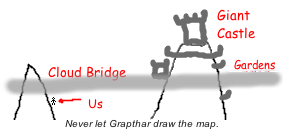
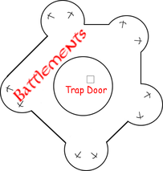
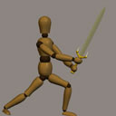
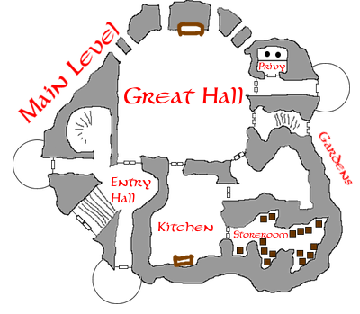
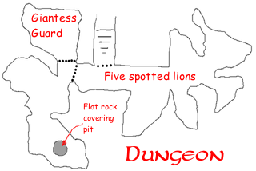
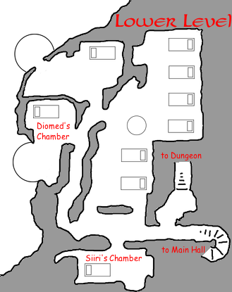

| Will the absence of the two elves be acted upon by the giants? | depends |
| Does the owner of the third segment know that we are coming? | no |
| Does the owner of the third segment keep it on their person? | yes |
| Would six extra fire giants be suspicious? | yes |
| Would six extra humanoid slaves be suspicious? | not necessarily |
| Do we need anything other than the invitation to get into the weeding? | not necessarily |
| Will the invitation allow us all into the wedding? | yes |
| Is the owner of the third segment a male? | no |
| Is the owner of the third segment a female? | yes |
| Is the owner of the third segment Siiri Dragosdottur? | yes |
| Is there a hidden entrance to the castle? | yes |
| Is the hidden entrance below the castle on the mountain? | no |
| Is the hidden entrance higher than the castle? | no |
| Is the hidden entrance accessed from deep within the mountain? | no |
| Is Arielle the Silver Dragon held within the castle? | yes |


The next morning the party hiked the remaining distance up the mountain, finally reaching a bridge of solidified cloud from one peak to the next. A castle could be seen atop the far peak. Katriana wildshaped into an eagle to fly across, circling. There were trolls stationed atop the battlements, with ballistae. Katriana noted a gatehouse with two cloud giant guards and extensive gardens beyond the castle, planted in the spongy cloud material. There were eight giants of various races in the gardens, apparently conversing. Katriana flew further out to the edge of the cloud bridge, where two cloud giants were digging into the cloud-stuff. They were sifting the debris to extract nuggets of pure silver, a fascinating operation.
| Is Siiri Dragosdottur an arcane spellcaster? | yes |
| Is Arielle the Silver Dragon held in the dungeon of the castle? | yes |
| Is there a key to the cell holding Arielle the Silver Dragon? | no |
| Are the adult Silver Dragons planning to assault the castle? | unlikely |
| Are the adult Silver Dragons planning to infiltrate the castle? | unclear |
| Will the adult Silver Dragons cooperate with us? | likely |
| Is Arielle the Silver Dragon held in the pit beneath the flat rock in the dungeon of the castle? | YES |
| Can we gain access to Arielle's cell by nonmagical means? | yes |
| Are there any magical defenses against teleportation within the castle? | yes |
| Does anyone in the castle know Ciellan Taralem personally? | no |
| Will anyone in the castle be surprised that Ciellan and Ruusa have servants? | unlikely |
Unfortunately when she flew back toward the castle, one of the trolls hit her with a ballista. Though not seriously injured the blow would have killed a normal animal, so Katriana pretended to plummet past the cloud bridge to her doom. Once out of sight she scouted the lower balconies, then returned to the party.
Edwin cast Arcane Eye, his favorite spell. It took two spells to map the entire castle. He then cast Commune again to follow up on some of the details. [Editor's note: the castle maps are scattered throughout this Chronicle]
Unwilling to make a frontal assault and seeing no good options for stealthy infiltration, the party returned to the site of their battle with the two elves to explore a third option. Grapthar cast Speak With Dead on the male elf, but the spell had no effect. He tried again on the female elf, with better results.
| Were you two going to attend the wedding in disguise? | No disguise. |
| What is your full name? | Ruusa Silvertongue |
| Assuming we met your terms how were you going to get us into the wedding? | We were going to figure that out on the way, but I'm dead now thanks to you. |
| What were you planning to bring as a wedding gift? Where are they registered? | Our gift to the giants was to be spider extermination services. |
The party was now convinced that infiltration in the guise of Ciellan Taralem, Ruusa Silvertounge, and their entourage was the best option. Kaerick disguised herself as Ciellan, and Katriana took on the role of Ruusa. The rest of the party would play their servants; and though Grapthar, Edwin, and Syn were all considered racial enemies of giants they hoped to come across as surly rather than hostile. Edwin cast Rary's Telepathic Bond to keep everyone in communication, and cast Serene Visage and Voice of the Dragon on Katriana to boost her diplomatic skills.
 The group climbed up onto the cloud bridge and walked across. They were waved through the gate by two cloud giant guards, and stopped by ogre guards inside. The ogres searched the party's packs, but were only interested in weapons which they demanded be left in the entry chamber. It took Chaden ten minutes to fully disarm. The ogres looked at the wedding invitation but seemed not to believe that a non-giant would have received it, until a cloud giant named Urick arrived. "Which of you is Ciellan? I'm very pleased you came. May I see the Spider-Slayer?" Fortunately Kaerick realized he must be referring to Ciellan's longsword, and gestured to the pile of weaponry in front of the ogres. Kaerick was allowed to keep the sword on her person; the rest of the weapons remained confiscated.
The "servants" unpacked the remaining gear. The wedding guests would sleep in the Great Room, and the ogres pointed out small alcoves along the wall where they could stash their belongings. Chaden really got into the role, getting an ogre to show her to the cistern to fetch water for her mistress, and to show her the location of the privy. Chaden also visited the kitchen, where a grumpy young cloud giantess and five ogres were preparing the meal. By getting the guards used to her wanderings, Chaden was preparing for further nocturnal exploration of the castle.

Urick showed Katriana and Kaerick the castle grounds. Katriana asked about the spider problem: "Siiri is upset about it. She was planning to talk to you about it at dinner." At the chiming of a bell Urick led them back to the feast hall. Ciellan (Kaerick) was seated in a high chair sized for a giant baby; "Diomed" was carved into the back. The rest of the party sat on low benches which had been hurriedly arranged at the head table. Cloud giants sat at one table, with the fire and stone giants at another. An aged fire giantess sat next to Kaerick: this was Siiri Dragosdottur. Katriana noticed the third segment of the Staff of Law in her hair: Siiri was using it as a hairpin. Siiri was also eager to see the Spider-Slayer, and then asked about the enormous spiders she had been fighting off nearly every day. "How do you recommend getting rid of them? Don't they have a nest or something? Last night one of them crawled into my hair!"
Kaerick convinced Siiri that her "servants" were also comrades at arms, and would all need to fight were the spiders to attack. Siiri, obviously shaken by constant ambushes by spiders, immediately convinced Urick to return all of their weapons. The meal concluded and now free to act the part of an adventurer, Chaden flipped from the bench and landed on her feet (to great applause).
Several of the adventurers had noted something strange about two of the stone giants. They were not speaking with the other giants, and they looked strangely familiar: they looked like the two stone giants previously found dead at the base of a cliff. The two giants had been killed by the icy breath weapon of a silver dragon, so presumably the two adult dragons had taken their form in order to infiltrate the castle and free their child. Katriana and Chaden sauntered by their table and whispered in Draconic, "We seek to release Arielle too. Meet us in the garden in 20 minutes." Dragons have exceptional hearing, but did not give any outward sign that they had heard.

The party wandered out to the gardens. Very clearly the dragons had heard, as they snatched up Katriana and Chaden and dragged them into the concealment of a grove of trees. The dragons were clearly worried: "What do you want of us?" Katriana explained, "We wish to help all good creatures unlawfully imprisoned." Through her patient explanation (and a natural 20 on Diplomacy) the dragons calmed and seemed to accept the situation. Edwin recounted the layout of the castle, the dungeons, its guards, and the rock covering the pit in which Arielle was held, all divined via Arcane Eye and Commune.
The Dragons knew of the Vaati, and the party explained about Miska the Wolf-Spider, the Queen of Chaos, and the Staff of Law. Though the dragons were sympathetic, their first priority was recovery of their daughter. Once she was safely home, they would be willing to create a diversion outside the castle. The dragons refused all offers of help: the only thing they had lacked was to know where Arielle was being held. The dragons would take care of the rest.

"Pardon the interruption, but I overheard your hair problem.
I have long hair too. You can never find a good hairdresser which is why I always
bring one with me. Fabio, my gnome, can help you with that."
-- Katriana
The party returned to the castle and made a big show about searching for evidence of spider nests, ending up at Siiri's bedchamber. Jytte was attempting to comb her mother's hair, but Siiri was dissatisfied by her efforts. Obviously the influence of the staff was compelling her to maintain a more fastidious appearance.
Katriana offered to have Edwin help Siiri with her hair, so Edwin obligingly clambered up onto her shoulder and did his best impression of a hairdresser whilst simultaneously casting Prestidigitation. His hairdresser impersonation must not have been very good, as Siiri noticed and identified the spell. Katriana climbed atop the dresser to continue searching for evidence of the spiders. Spotting the third segment of the staff of law, Katriana deliberately touched it in hopes that the transfer of ownership would summon the demons and help convince Siiri to hand it over. Siiri immediately reached out to take it back, saying "That's my special hair pin."
As suspected, two changes of ownership in such a short time attracted the attention of the demons. They had developed a new tactic: rather than Teleport, which would entangle them in the Anticipate Teleportation Edwin habitually cast each morning, they opened a Gate directly from the Steaming Fens. Through the gate one could see a surreal landscape of alabaster spires. Three spiders immediately leaped through, with a fourth appearing a short time later. The party and the giant guards made quick work of them. [Editor's note: I just can't work up enthusiasm to document the combat. It was over in two rounds. Jytte was useless, just screaming and hiding in the corner.]
Siiri was outraged at being ambushed again, and screamed for servants to come clean the demonic guts and ichor from her bed. To make them work faster she touched the hairpin and said "FIAT," which Hasted them. Clearly, she would not fall for swapping the hairpin with a fake. She then turned to Ciellan (Kaerick) and said, "I HATE those things. What do I have to do to be rid of them!?!"
Next adventure: tell Siiri exactly how to be rid of the spiders, and roll Diplomacy.